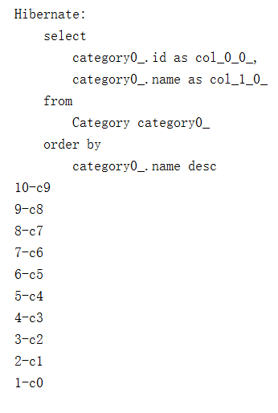

本文主要介绍Hibernate查询，包括HQL，EJBQL，QBC和QBE
HQL vs EJBQL
- NativeSQL > HQL > EJBQL(JPQL 1.0) > QBC(Query By Criteria) > QBE(Query By Example)
- 总结:QL应该和导航关系结合，共同为查询提供服务。
第六十课. Hibernate查询 HQL-EJBQL-QBC-QBE-2
Category.java：
Msg.java：
MsgInfo.java：
Topic.java：
执行建表语句：
然后我们去存一些数据：
执行效果：
数据被成功插入！
接下来我们就基于这样的数据做查询。
第一种，QL语言：
执行：
成功将Category中插入的十条记录都取出来了。
第二个查询：
查询category中名字大于c5的名字：
执行：
第三个查询：
将category的名字倒序输出：
执行：
第四个查询：
这一次我们查询不重复的category，也是按照倒序排列：
注意输出的SQL语句，是通过id来区分两个记录是否重复：
看第五个查询：
我们这一次查询id号大于2且小于8的category：
其中:min是一个占位符，可以通过下面的setInteger来设置，也就是将占位符的参数设成了Integer类型。
执行：
没问题！
其实还可以用链式编程方式来写这一段代码：
由于setInteger返回的是一个query对象，所以依然可以调用它的setInteger方法，这就是链式编程。
第六个查询，其实是第五个的替代写法：
效果是一样的。
看第七个查询，就是分页：
这个查询中，先将所有的category倒序排列，然后我们设定最大结果集是4，从第二条开始查询，也就是7：
第八个查询：
这一次我们取出来的不是对象，而是具体的字段，他们存储在List列表的Object数组之中，然后用数组的形式将它们取出打印：
运行：

第九个查询：
我们执行一下：
由于ManyToOne默认是Eager，所以hibernate在取出topic之后，会把级联的category也取出来，这就是第二个sql语句。
如果我们把ManyToOne改成Lazy（Topic.java）：
再运行：
这次就不会把category取出来了，也就不执行第二次sql了。
如果将屏蔽的语句System.out.println(t.getCategory().getName());
取消屏蔽，那么在lazy情况下也会执行第二条sql，因为用到了category，就回去取。
第十一个查询：
这一次我们多次导航，查询一个版块所有帖子（m.topic.category.id）：
|
|
运行：
由于有导航（一对多、多对一），所以hibernate自己就可以帮我们连接表。
第十二个查询：
这一次我们将表中数据取出来，组成一个临时对象MsgInfo返回，这个对象就是DTO，是用来传输数据的。
第十三个查询：
这一次我们将两张表通过join连接起来，由于已经设了导航，所以不需要再设置连接条件：
第六十一课. Hibernate查询-HQL-EJBQL-QBC-QBE-3.
|
|
这一次我们查询语句直接让一个对象等于一个参数，这个参数我们动态设置，通过setParameter来设置，然后两个对象通过hashcode和equals来进行比较。
最终用uniqueResult来返回查到的结果。
第十五个查询：
这次我们使用聚合函数count(*)，来查询一共有多少Msg：
|
|
第十六个查询：
这次我们依然使用聚合函数，返回一个对象数组，然后依次将其拿出来打印：
|
|
第十七、十八、十九个查询：
|
|
上面就是HQL的语法。
第六十二课. Hibernate查询-HQL-EJBQL-QBC-QBE-4
第二十个查询：
查询没有帖子的Topic：
第二十一个查询：
查询名字中有零个或者多个5的Topic（%代表零个或者多个，_代表一个或者多个）：
|
|
第二十三个查询：
|
|
第二十四个查询：
用到了数学的函数：
第二十五个查询：
我们设想一个场景，就是在集群环境下，多台服务器都围绕着一个数据库做操作，那么这时用服务器自己的时间就会不统一，最好的办法是使用数据库的时间：
|
|
运行：
第二十六个查询：
|
|
第二十七个查询：
使用group by：
|
|
第二十九个查询：
使用子查询：
|
|
第三十个查询：
|
|
<All代表小于取出来所有值，也就是小于2、4、6、8等等所有取出来的值。没什么用
第三十一个查询：
|
|
第三十三个查询：
用命名查询：
在Topic.java上加上：
然后在测试代码中直接使用这一段已经命名的查询：
|
|
第三十四个查询：
使用本地Sql:
|
|
将category表中取出的结果转化成Category对象。
以上就是HQL语句的所有例子，遇到不明白的就可以到上面查询。
第六十三课. Hibernate查询 HQL-EJBQL-QBC-QBE-5
QBE是QBC的一个子集。
先来看QBC的测试代码：
Criteria就是一个可以让查询语言更像面向对象语言的解决方案，那么上面一个测试代码生成的sql语句就是：
发现其实上面的语句是连接了两张表的。
Criteria是与具体的session关联的，DetachedCriterea可以先创建，创建好之后再与session连接，更具有灵活性。
下面来看QBE,也就是Query By Example（通过例子查询）:
|
|